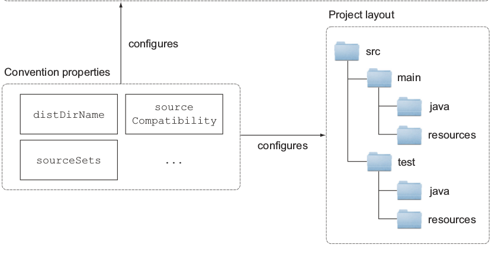
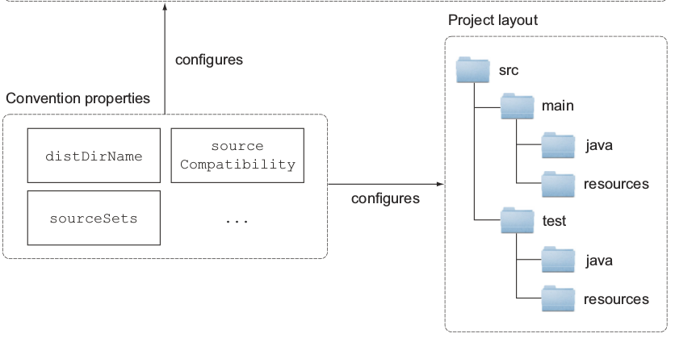

Gradle提供了一些默认的Tasks给Java项目，比如，编译源代码、运行测试、打包JAR.每一个Java项目都有一个标准的路径布局，这个布局定义了去哪里找项目的源代码、资源文件和测试代码，你也可以在配置中修改这些默认位置。
Gradle的约定类似于Maven的约定优于配置的实现，Maven的约定就是一个项目只包含一个Java源代码路径，只产生一个JAR文件，对于企业级开发来讲这样是显然不够的，Gradle允许你打破传统的观念，Gradle的构建生命周期如下图：
 

和其他构建工具集成
Gradle完全兼容Ant、Maven，你可以很容易的从Ant或Maven迁移到Gradle，Gradle并不强迫你完全把你的Build逻辑迁移过来，它允许你复用已有的Ant构建逻辑。Gradle完全兼容Maven和Ivy仓库，你可以从中检索依赖也可以发布你的文件到仓库中，Gradle提供转换器能把Maven的构建逻辑转换成Gradle的构建脚本。
从Ant,Maven迁移到Gradle
现有的Ant脚本可以无缝的导入到Gradle项目中，Ant的Target在运行时直接映射成Gradle的任务，Gradle有一个AntBuilder可以把你的Ant脚本混成Gradle的DSL（领域特定语言），这些脚本看起来像是Ant的XML，但是去掉了尖括号，对于Ant用户来说非常方便，不需要担心过渡到Gradle的学习周期。
Gradle能够解析现有的Maven POM，从而得到传递性依赖的信息，并且引入到当前项目中，在此基础上，它也支持排除传递性依赖或者干脆关闭传递性依赖，这一点是Maven所不具备的特性。 Gradle项目使用Maven项目生成的资源已经不是个问题了，接着需要反过来考虑，Maven用户是否能够使用 Gradle生成的资源呢？或者更简单点问，Gradle项目生成的构件是否可以发布到Maven仓库中供人使用呢？这一点非常重要，因为如果做不到这一点，你可能就会丢失大量的用户。幸运的是Gradle再次给出了令人满意的答案。使用Gradle的Maven Plugin，用户就可以轻松地将项目构件上传到Maven仓库中：
apply plugin: 'maven'
...
uploadArchives {
repositories.mavenDeployer {
repository(url: "http://localhost:8088/nexus/content/repositories/snapshots/") {
authentication(userName: "admin", password: "admin123")
pom.groupId = "com.juvenxu"
pom.artifactId = "account-captcha"
}
}
}
在上传的过程中，Gradle能够基于build.gradle生成对应的Maven POM文件，用户可以自行配置POM信息，比如这里的groupId和artifactId，而诸如依赖配置这样的内容，Gradle是会自动帮你进行转换的。由于Maven项目之间依赖交互的直接途径就是仓库，而Gradle既能够使用Maven仓库，也能以Maven的格式将自己的内容发布到仓库中，因此从技术角度来说，即使在一个基于Maven的大环境中，局部使用Gradle也几乎不会是一个问题。